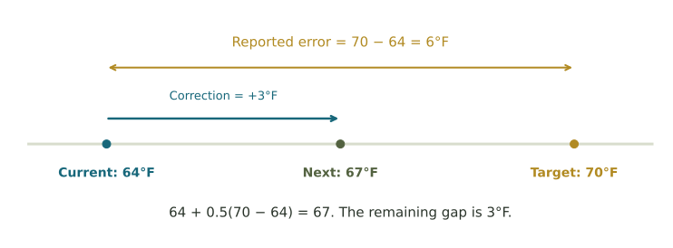
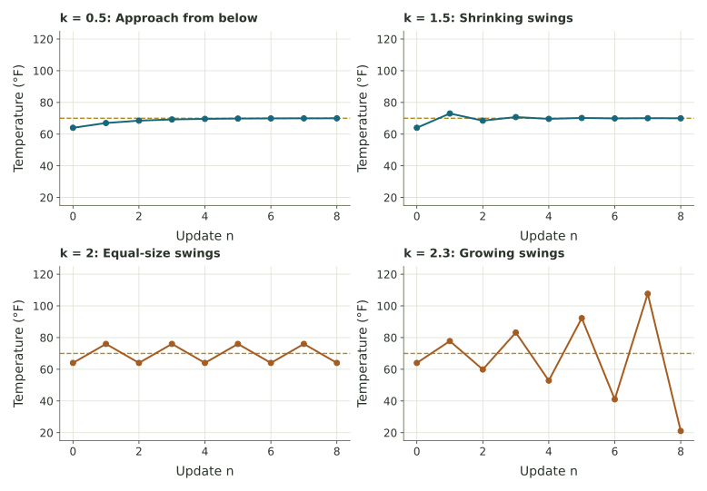
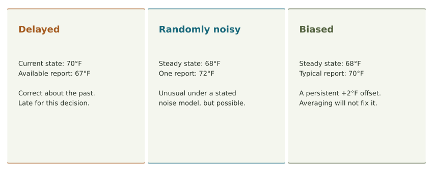
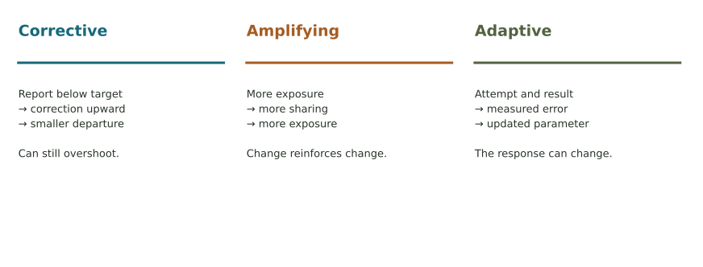
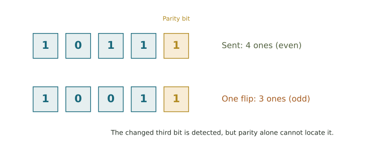
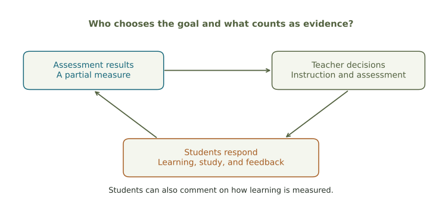

When information changes what happens next.
Build a feedback loop from familiar sequences, then discover how timing, response strength, and measurement shape its behavior.
A good intention can arrive at the wrong time
Imagine adjusting a shower. The water feels cold, so you turn the handle toward hot. The warmer water takes time to reach you. If you turn the handle again before that first change arrives, you may get a very hot surprise. Your goal stayed the same. The information guiding your next move was behind the action.
This week asks how a system uses information to change what happens next. That is the setting for cybernetics, the study of communication, feedback, and control in machines, living things, and social systems. You do not need engineering, calculus, or a background in complex systems. We will build the ideas from the recursive sequences of Week 1 and the measurements and variation of Weeks 3–4.
What you will calculate
- A difference from a target and a correction.
- A sequence using current information.
- A second sequence using an older report.
- A simple learning update and an uncertainty measure.
What you will explain
- How a measurement closes a feedback loop.
- Why a correction can overshoot a target.
- How delay differs from random noise.
- What goals and measurements leave out in human systems.
Read in order and try each short check before opening its explanation. Use the explorer to follow each update. The illustrated chapter includes review exercises and complete solutions. The history timeline and information-theory extension give these calculations a wider setting.
A subscript tells you when, not how much to multiply
A sequence is an ordered list. A recursive rule tells us how to use earlier values to find a new one. If \(a_0=10\) and \(a_{n+1}=a_n-2\), the list begins \(10,8,6,4,\ldots\). Starting at step 0, three updates take us to \(a_3=4\). There are four listed values but only three changes.
For our greenhouse, let \(x_n\) mean temperature in degrees Fahrenheit at step \(n\). We will treat each step as one hour. Thus \(x_0=64\) is the starting temperature, \(x_1\) is the temperature after one update, and \(x_2\) is the temperature after two updates. The subscript is a label for time. It is neither an exponent nor a multiplication.

Translate the notation before calculating
If we are at step \(n=2\), then \(x_{n-1}=x_1\) means the previous temperature, \(x_n=x_2\) means the current temperature, and \(x_{n+1}=x_3\) is the next one we want to find.
A sequence starts at \(a_0=5\) and uses \(a_{n+1}=2a_n\). List the first four values and count the updates.
Compare your reasoning
The values are \(5,10,20,40\), labeled \(a_0,a_1,a_2,a_3\). Reaching 40 takes three updates. Each update uses the most recently calculated value.
A reading becomes feedback when it changes the next action
A thermometer on a wall can display the temperature without controlling anything. A thermostat uses the reading to decide whether to change heating or cooling. That action changes the room, which changes the next reading. Information returns to influence the process that produced it. This returning influence is feedback.

| Part | Meaning | Greenhouse example |
|---|---|---|
| State | The condition that can change | Temperature now |
| Sensor | What measures the condition | Thermometer |
| Reference or target | The desired value | 70°F |
| Controller | The rule or decision maker | Compare report with 70; choose correction |
| Actuator | What carries out the action | Heater or cooling fan |
The state and the measurement need not agree. The state is the temperature actually present now; a measurement is a report about temperature. It might describe an earlier hour or contain an error. Our first model makes them agree so we can see one idea at a time.
A sprinkler runs every morning at 6 a.m. A second sprinkler runs when a soil sensor reports dry ground. Which uses soil-moisture feedback?
Compare your reasoning
The second uses the measured outcome to choose its next action. The first follows a fixed schedule. A schedule can still be useful, but it does not check whether the soil needs water.
Start here, measure a difference, make a correction
Our invented greenhouse starts at 64°F and has target \(r=70\)°F. Its controller corrects half of the reported difference each hour. We assume the equipment can produce that exact net temperature change, in either direction. There is no sunlight, heat loss, equipment limit, or random measurement error in this model. These assumptions make the timing of feedback visible.
The control error is target minus the report used for the decision. “Error” here means a signed difference, not an arithmetic mistake. A 64°F report gives \(70-64=+6\): the report is below target. A 73°F report gives \(70-73=-3\): the report is above target.
The response strength \(k\) says how much of that difference we use. With \(k=0.5\), we use one-half of the reported difference. With a current report, the rule becomes

Write the first two updates in full
First: \(x_1=64+0.5(70-64)=64+3=67\).
Second: \(x_2=67+0.5(70-67)=67+1.5=68.5\).
The second correction is smaller because it uses the new temperature, 67. Continue by putting 68.5 into the same rule.
| Update | Current (°F) | Report (°F) | Correction (°F) | Next (°F) |
|---|---|---|---|---|
| 0 → 1 | 64 | 64 | +3 | 67 |
| 1 → 2 | 67 | 67 | +1.5 | 68.5 |
| 2 → 3 | 68.5 | 68.5 | +0.75 | 69.25 |
| 3 → 4 | 69.25 | 69.25 | +0.375 | 69.625 |
A water level starts at 84 cm, with target 100 cm and \(k=0.25\). Use current reports to find the first two new levels.
Compare your reasoning
The first error is 16 cm, so the correction is 4 cm and the level becomes 88 cm. The next error is 12 cm, so the correction is 3 cm and the level becomes 91 cm. Correcting one-quarter of the remaining error leaves three-quarters each time.
The new state still starts from now
Keep the same target, starting temperature, and response strength. Change only the thermometer’s delivery time. The report available at step \(n\) now describes step \(n-1\). The correction uses the older report, but it is added to the current temperature:
The two subscripts do different jobs. At step 2, \(x_2\) is where we start the next change, while \(x_1\) supplies the report. We need an earlier history value to begin: assume \(x_{-1}=x_0=64\). This says the greenhouse was also 64°F one hour before our start.
Watch the two numbers travel through the rule
At step 0: current 64, old report 64, correction +3, so \(x_1=67\).
At step 1: current 67, old report still 64, correction +3, so \(x_2=70\).
At step 2: current 70, old report 67, correction +1.5, so \(x_3=71.5\).
The system has reached its target at step 2. The available report has not caught up, so the next correction carries it beyond 70.

| Update | Current (°F) | Old report (°F) | Correction (°F) | Next (°F) |
|---|---|---|---|---|
| 0 → 1 | 64 | 64 | +3 | 67 |
| 1 → 2 | 67 | 64 | +3 | 70 |
| 2 → 3 | 70 | 67 | +1.5 | 71.5 |
| 3 → 4 | 71.5 | 70 | 0 | 71.5 |
| 4 → 5 | 71.5 | 71.5 | −0.75 | 70.75 |
| 5 → 6 | 70.75 | 71.5 | −0.75 | 70 |
| 6 → 7 | 70 | 70.75 | −0.375 | 69.625 |
At step 3, the current temperature is 71.5°F but the old report is 70°F. What correction is made, and what temperature follows?
Compare your reasoning
The reported error is 70 − 70 = 0, so the correction is 0 and the next temperature remains 71.5°F. Zero reported error does not mean the present temperature is at the target.
The graph shows when the direction changes
Put step number on the horizontal axis and temperature on the vertical axis. Each dot is a calculated state; connecting segments help your eye follow the sequence. They do not specify exactly how temperature changes within an hour. The dashed horizontal line marks 70°F.

Overshoot means passing the target. Oscillation means repeated back-and-forth variation. A damped oscillation has a shrinking envelope of departures from the target: compare successive peaks or troughs. Not every single step has to move closer, and two consecutive states can be equal.
In our delayed sequence, steps 3 and 4 are both 71.5, above the target. Steps 7 and 8 are both 69.625, below it. The sequence continues with smaller swings. The controller is responding to past shortages and excesses after the actual condition has changed.
A graph is evidence about the displayed steps
Use the table to explain a particular overshoot. A finite plot alone does not prove what every later value will do. In this fixed mathematical example the oscillation does decay, but a similar-looking short beginning is not a universal guarantee.
Why does the delayed greenhouse keep heating after reaching 70°F? Name the actual report used.
Compare your reasoning
To calculate x₃, it starts at the current x₂ = 70 but uses the old x₁ = 67 report. Half of the reported 3°F shortage is +1.5°F. It is correcting a shortage that is already gone.
Current information can still produce an overreaction
A delay can cause a swing, but delay is not the only cause. With current reports and \(k=1.5\), the first correction is \(1.5(70-64)=9\). Starting at 64, the temperature jumps to 73. The next error is −3, the correction is −4.5, and the temperature becomes 68.5. The sequence begins \(64,73,68.5,70.75,\ldots\).

There is a short way to understand the immediate rule. If the old gap is \(r-x_n\), the correction removes \(k\) times that gap. The gap left afterward is \((1-k)(r-x_n)\). For \(k=0.5\), one-half of the gap remains on the same side. For \(k=1.5\), the remaining gap is −0.5 times the old one: half the size, on the other side.
| Strength k | Immediate rule, starting away from the target |
|---|---|
| 0 | No correction; the state stays where it starts |
| 0 < k < 1 | Approaches without crossing |
| 1 | Reaches the target in one update |
| 1 < k < 2 | Crosses repeatedly; departures shrink |
| 2 | Alternates between two equal departures |
| k > 2 | Alternating departures grow |
This table is about this particular rule with current reports. Do not apply its thresholds unchanged to delayed controllers. If the state starts exactly at the target, zero error keeps it there under any of these strengths in the ideal model.
With target 10, start 0, and current reports, calculate two updates using \(k=1.5\). Is this corrective or amplifying feedback?
Compare your reasoning
The states are \(0,15,7.5\). The response is corrective: it opposes the measured departure. It is strong enough to cross the target, so corrective feedback does not guarantee a path without overshoot.
A late reading and a noisy reading create different problems
A delayed report can be perfectly accurate about an earlier hour. A noisy report fluctuates around what it measures. A biased sensor consistently reads too high or too low. A rounded report loses some precision. More than one of these can occur at once.

A z-score judges unusualness under a stated model
Suppose a steady 68°F environment produces approximately normal sensor readings with mean 68 and standard deviation 2°F. A reading of 72 has \(z=(72-68)/2=2\). It is two standard deviations above the mean. It is unusual under that model, but it does not by itself prove a temperature change or a broken sensor. Compare the report with other evidence.
For independent, unbiased readings of the same steady condition, averaging \(m\) readings reduces the standard deviation of the average to \(\sigma/\sqrt{m}\). With individual standard deviation 2°F, averages of 1, 4, and 16 readings have standard deviations 2, 1, and 0.5°F. This is variability across repeated averages, not a promise that any particular average is exactly right.

Averaging cannot remove a shared bias, and correlated readings may provide less improvement. If the temperature is changing while we gather data, an average of past readings is not simply a precise measurement of the present. This creates a practical question: how much information can we gather before the action becomes late?
A sensor always reads 2°F too high. Will averaging 16 of its readings remove that 2°F bias?
Compare your reasoning
No. Averaging can reduce independent random variation, but a shared +2°F bias remains. Checking or calibrating the sensor addresses a different problem.
Reference for the sampling-mean framework: NIST Engineering Statistics Handbook. The calculation here assumes independent readings of the same steady state.
Correct, amplify, or adapt
Corrective, or negative, feedback opposes a measured departure. Amplifying, or positive, feedback reinforces a change. These words describe direction, not whether the result is good or bad. An adaptive system changes its adjustable rule or parameters using information from earlier results. Adaptation is another feature of a system, rather than a third mutually exclusive sign of feedback.

Amplification uses the updated amount
Suppose a hypothetical exposure index begins at 100 and grows by 20% per round. The rule \(v_{n+1}=1.2v_n\) gives \(100,120,144,172.8,\ldots\). The second increase is 24, not 20, because the base is now 120. These are index values, so decimals are meaningful. A real count of people is whole, and an actual spreading process has a finite audience and other limits.
A learning rule generates a sequence of weights
Let a toy predictor use \(\widehat y=2w\), where \(w\) is an adjustable number called a weight and \(\widehat y\) means prediction. The target output is 6. Choose the training rule \(w_{n+1}=w_n+0.25(6-2w_n)\), starting at \(w_0=1\).
| Attempt n | Weight wₙ | Prediction 2wₙ | Error 6 − prediction | Next weight |
|---|---|---|---|---|
| 0 | 1 | 2 | 4 | 2 |
| 1 | 2 | 4 | 2 | 2.5 |
| 2 | 2.5 | 5 | 1 | 2.75 |
| 3 | 2.75 | 5.5 | 0.5 | 2.875 |
The successful weight is 3 because \(2(3)=6\). Notice the units of the two goals: a weight of 3 gives a prediction of 6. They are not interchangeable. This one-example model shows how returned information can alter future predictions; it cannot establish success on other examples.
The current weight is 2.5. Find the prediction, prediction error, and next weight using the rule above.
Compare your reasoning
The prediction is 5, the error is 1, and the weight correction is 0.25. The next weight is 2.75, so the next prediction will be 5.5. The prediction error is not added directly to the prediction; the chosen rule first changes the weight.
A message can be represented, checked, and interpreted
The greenhouse thermometer sends a signal to its controller. A digital signal can represent a measurement as a string of bits, each 0 or 1. With 3 bits there are \(2^3=8\) possible patterns. The code must specify what each pattern means; the symbols alone do not supply the interpretation.
Extra structure can help detect damaged messages. With even parity, append a bit so the total number of 1s is even. The data 1011 has three 1s, so append 1 to get 10111. One flipped bit makes the total odd and signals an error. Two flipped bits can leave the count even. This check detects any single-bit change but does not identify or repair it.

Information theory also measures surprise relative to a probability model. An event assigned probability \(p\) has surprisal \(I=-\log_2 p\) bits. You can use powers of two without knowing logarithm techniques: probabilities 1/2, 1/4, and 1/8 correspond to 1, 2, and 3 bits. A less probable event carries more surprise under that model. “More bits” does not by itself mean more truth, social value, or importance.
Entropy is average surprise across possible outcomes. A fair coin has two equally likely outcomes and entropy 1 bit per toss. A coin that always lands heads has entropy 0, since its outcome is certain. The timeline’s coin experiment makes that distinction visible; the optional AI Mathematics page scores predictions for observed tokens.
A signal is assigned probability 1/32. How many bits of surprise does its occurrence carry? Does this tell us whether the sensor was correct?
Compare your reasoning
Since 32 = 2⁵, the surprise is 5 bits. This is a probability-based score, not a check of the sensor’s accuracy, age, or usefulness.
Who sets the target, and who observes the observer?
A classroom may use assessment results to change instruction. Students respond to the new instruction and to the assessment itself. Their responses change what the instructor observes next. The observer’s decisions become part of the situation being observed.

Norbert Wiener’s 1948 Cybernetics connected communication and control in machines and living systems. Claude Shannon’s 1948 communication theory studied messages, uncertainty, noise, and reliable transmission. These are connected subjects with different central questions.
Anthropologist Margaret Mead helped bring questions about culture and social organization into the interdisciplinary Macy Conferences. In a 1967 address published in 1968 as Cybernetics of Cybernetics, she asked whether the American Society for Cybernetics could apply cybernetic ideas to its own organization. The people studying feedback could also examine their own feedback loops.
The illustrated history preserves a broad cast: human computers, programmers, engineers, mathematicians, psychologists, and organizers. Follow the contributions of Mead, Janet Freed, Rózsa Péter, F. Jessie MacWilliams, Vera Pless, and other women alongside Wiener and Shannon. You are not expected to memorize all 63 entries. Use the guided routes to explain how one historical problem connects to this week’s mathematics.
A model can describe the consequences of a chosen goal
It cannot decide by itself whether that goal is fair, whether the measurement represents everything that matters, or whose experience is missing. In a school, a higher test score may be one useful observation; it is not a complete definition of learning.
Historical sources: Wiener’s book, MIT Press; Shannon’s paper, Bell Labs; Mead’s address, American Society for Cybernetics. The timeline links individual historical sources.
Put the loop into your own words
Before moving on, explain one update with its current state, report, target, correction, and next state. Then explain how changing report age or response strength changes that calculation. Use a specific row rather than only saying “feedback happened.”
Practice and investigate
Week 6 follows money balances through repeated updates. The setting changes, but the habit carries over: name the state, define one step, state the rule, and use the result as the next input.